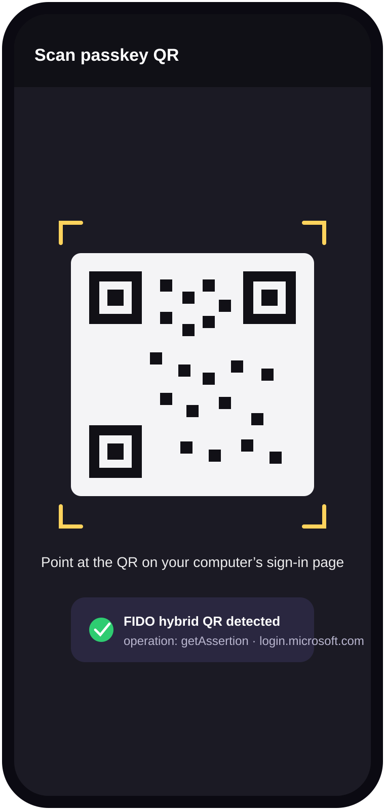
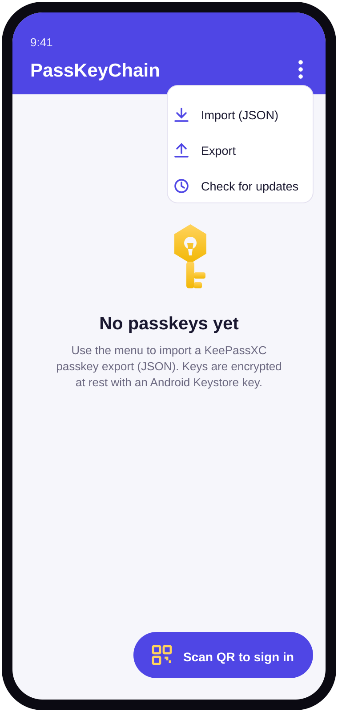

A look at the app
Design renderings of the current build.

Your imported passkeys, encrypted at rest.

Scan a desktop sign-in QR.

Import a KeePassXC export to begin.
PassKeyChain imports FIDO2 passkeys from a KeePassXC export, keeps the private keys in Android Keystore-encrypted storage, and uses them to sign in — on the phone, or across devices by scanning a sign-in QR.
A self-hosted passkey manager — you hold the keys, not a cloud vendor.
Reads KeePassXC passkey exports (fido2Credentials JSON). The parser is tolerant of PEM, base64 PKCS#8, or raw-scalar key encodings.
Credentials are sealed with an AES-256-GCM key held in the Android Keystore — hardware-backed / StrongBox where the device supports it.
Registers as a system passkey provider (Android 14+), so imported keys are offered when you log in to sites and apps on the phone.
Scans the FIDO:/ hybrid QR shown by a desktop sign-in page and signs the assertion with your imported key.
Export back to the KeePassXC-compatible format. No lock-in — your credentials move with you.
Checks GitHub Releases on its own channel (debug / release) and installs the next build — debug never mixes with release signatures.
Design renderings of the current build.
Your imported passkeys, encrypted at rest.

Scan a desktop sign-in QR.

Import a KeePassXC export to begin.
Three steps, no account, no server.
Export your passkeys from KeePassXC to JSON, then open it in PassKeyChain. Keys are normalised and encrypted into Keystore-backed storage.
On the phone, pick PassKeyChain from the system passkey sheet. On another device, tap Scan QR and point at the sign-in page’s QR.
The app watches its GitHub Releases channel and offers the next build in-place. Export whenever you want a backup.
Built to be verifiable; the hard cross-device bits are a work in progress.
FIDO:/ QR decodingThe deterministic crypto for the hybrid flow is implemented and tested; the radio/network stages fail loudly rather than pretend to work. See hybrid/HybridTransport.kt.
🔒 Security & scope. PassKeyChain manages credentials you already own. Private keys never leave your device; there is no server and no telemetry. Passkey portability follows the FIDO Alliance Credential Exchange direction (2025). Treat exports like you would any password-vault backup.